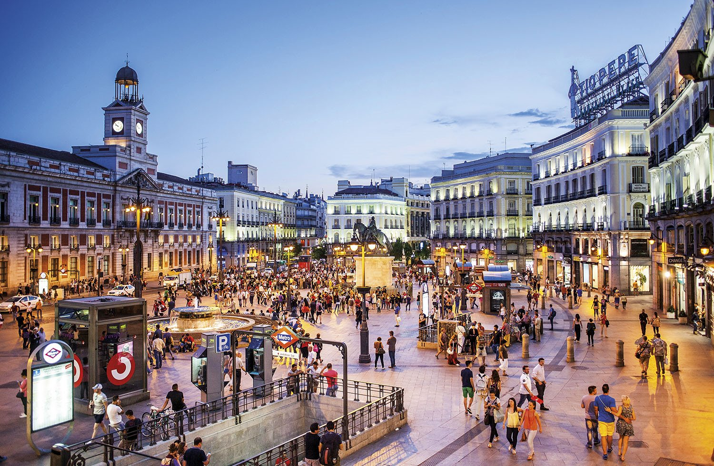

Madrid es un municipio y ciudad de España. La localidad, con categoría histórica de villa,9 es la capital del Estado10 y de la Comunidad de Madrid. Dentro del término municipal de Madrid, el más poblado de España, viven 3 223 334 personas empadronadas, según el INE de 2018. El área metropolitana asociada tiene una población de 6 507 184 habitantes,11 por lo que es la tercera o cuarta de la Unión Europea, según la fuente, tras las de París y Londres, y en algunas fuentes detrás también de la Región del Ruhr, así como la tercera ciudad más poblada de la Unión Europea, por detrás de Berlín y Londres
La ciudad cuenta con un PIB nominal de 230 018 millones de euros y un PIB per cápita nominal de 34 916 € (40.720 US$),[cita requerida] siendo la 1.ª área metropolitana española en actividad económica; y la décima de Europa tras Londres, París, Rin-Ruhr, Ámsterdam, Milán, Bruselas, Moscú, Fráncfort del Meno y Múnich.[cita requerida] Madrid es también la ciudad española con más pernoctaciones hoteleras.
